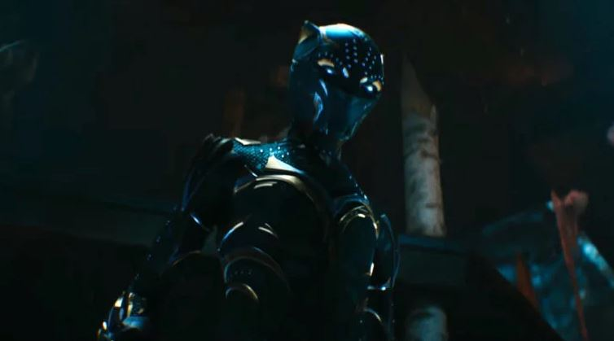
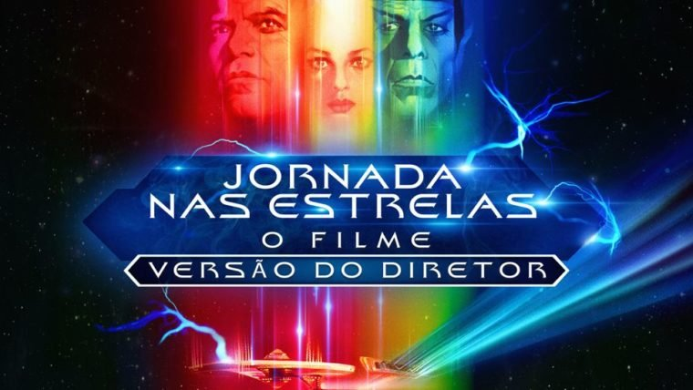

LÁ DO BUNKER 64
Engima do Mistério

LÁ DO BUNKER 64
Engima do Mistério

CONFIRA O PREVIEW
Pokémon Scarlet e Violet expandem a fórmula da franquia

PRÉ-VENDA COMEÇOU
One Piece Film Red terá sessões antecipadas no Brasil

DE TOLKIEN
A História da Terra-média chega ao país em novembro

SAIBA MAIS
Resident Evil 4 abre pré-venda e revela preços no Brasil
Em alta
1
Michael B. Jordan e Jonathan Majors aparecem ENORMES em fotos de Creed 3
2
Michael B. Jordan e Jonathan Majors aparecem ENORMES em fotos de Creed 3
3
Michael B. Jordan e Jonathan Majors aparecem ENORMES em fotos de Creed 3
4
Michael B. Jordan e Jonathan Majors aparecem ENORMES em fotos de Creed 3
5
Michael B. Jordan e Jonathan Majors aparecem ENORMES em fotos de Creed 3
Direto do Bunker
Ver mais ->

Filmes
O que a nova versão de Jornada nas Estrelas: O Filme traz de novo
Séries e TV
Guia básico de coreano para fãs de k-drama e k-pop
Game
Quanto consomem os consoles em stand-by?
Colunas e opinião
Ver mais ->
Tayná Garcia
Como uma das partes mais impactantes de The Last of Us é contada por pedaços de papéis
Gabriel Avila
O revisionismo chegou ao cinema de super-heróis. E agora?